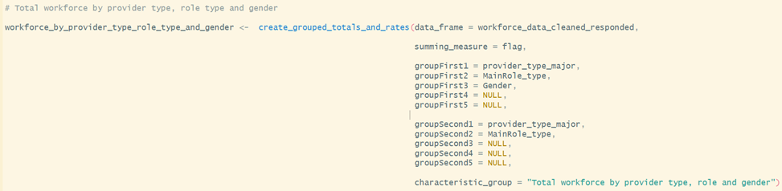
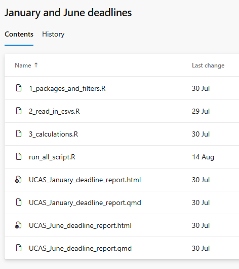
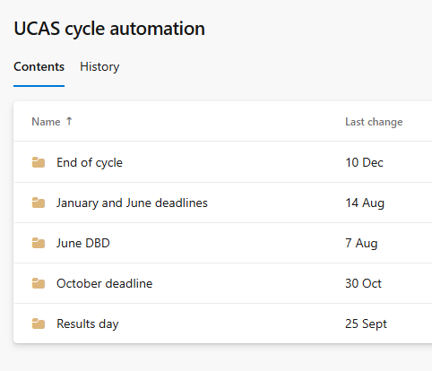
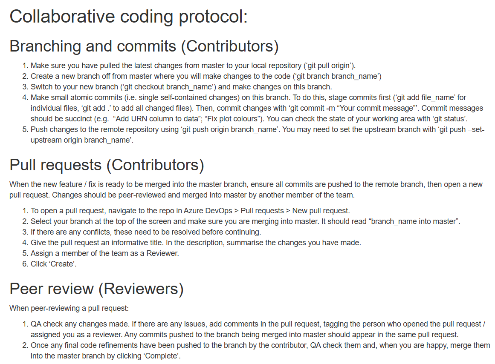
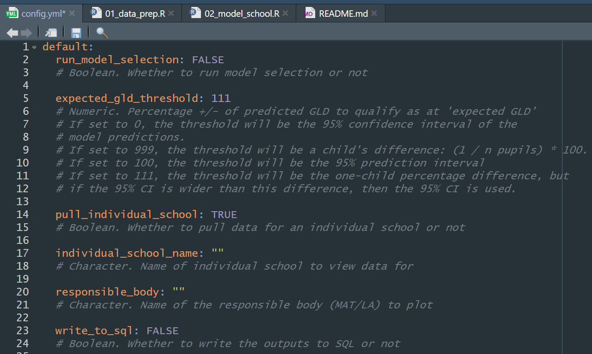
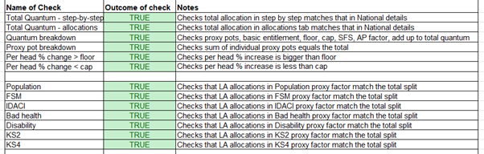
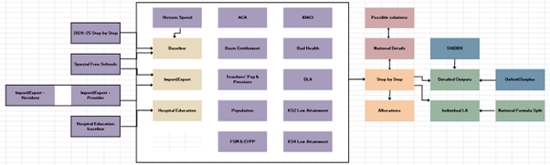

RAP case studies
Case studies which illustrate how RAP principles have been applied in practice.
RAP case studies
Each case study provides an overview of the project, the context and background, and how the RAP principles were implemented.
These case studies serve as practical examples to help you understand how to apply RAP principles in your own work. They demonstrate the benefits of following these principles, such as improved data quality, enhanced reproducibility, and more efficient workflows. We would like to thank the RAP Champions Network for providing these case studies.
Provided by
Workforce and Finance Statistics Team, Data Insight and Statistics Division
Analysis Type
Ad-hoc analysis, likely to be repeated e.g., different breakdowns
Context and Background
We collect data on the FE workforce. Each row of data is a person. We collect data on their characteristics, pay, subjects taught and roles. For our publication and ad-hoc analysis, we frequently need to know the number of staff split by various characteristics.
Process and principles applied
I created a function called “create grouped totals and rates”. This function groups by the inputs input. It creates totals at the provider level, LA level, regional level and national level. It allows staff to be summed by their headcount or the FTE. The function was QA-d at length to ensure that the output was correct. The function is now used to produce any total for the publication, as well as any totals that are needed for internal ad-hoc analysis.
Some measures e.g. disability status, have a prefer not to say option. However, for some of these measures, we show percentages only for staff who have chosen to disclose. E.g. the percentage of staff who have answer “Yes”, “No” should sum to 100%. This function takes this into account. If a measure should include/not include the “prefer not to say” option in the percentages, the function is dynamic like this.
Outcome/results
This function improved quality. We have QA-d the function and the raw data entering the function. This means that the output produced from the function for ad-hoc analysis only needs a smaller QA, since it has come from a repeatable process.
This function has saved time for our team. It has meant that almost any question asked about total number of staff that fit a certain criteria and geography can be quickly created.
E.g. if I want to know the total number of staff in each role and each provider type with each gender, I would use the function like this:

It would create an output across all the geographies specified above. It would show the % of each staff by role and provider type, who have each gender.
Provided by
HE admissions and Widening Participation Statistics Team, Higher Education Analysis Division
Analysis Type
Internal regular reporting
Context and Background
UCAS share data at regular intervals throughout the university application cycle (some of which is published and some of which is unpublished) which provides early information on the current state of the HE sector. Within DfE, this data needs to be analysed quickly once it arrives so that internal policy colleagues have an accurate understanding of the current picture, and can be prepared to respond to any issues that arise.
Process and principles applied
The team have developed a standard structure which is used across all timepoints which UCAS report on, with the relevant R code being stored as part of a team Azure DevOps repository for collaborative code development. Each timepoint in the UCAS application cycle has its own folder within the repo, and there are individual scripts which align to the standard structure (generally as follows)
Packages and filters – sets up library calls, global objects such as dates, recyclable functions and any required Databricks or SQL connections
Read in csv files or query Databricks/SQL – for data that UCAS publish, this is supplied to us as csv files (and stored in a standard location) which can be read into R as required. For more detailed unpublished data, this is uploaded to Databricks and queried using a SQL script
Calculations – any further manipulation or summarisation of the data from step 2, usually done with the recyclable functions created in step 1
Quarto output – sources steps 1-3 and produces summary visualisations, tables or narrative lines based on the outputs from step 3
Run all scripts used, e.g. when there are two timepoints with the exact same data structure and therefore the timepoint the data relates to is the only thing that is changed
Each timepoint folder has its own section as part of the readme document in the repo, which details how it needs to be updated when it gets run, plus whether it’s based on published or unpublished data.

RAP principles - Source data acquired and stored sensibly – published UCAS data is stored in a standard location as csv files and unpublished data is uploaded to Databricks for secure access
- Sensible folder and file structure - each timepoint has its own folder within the Azure DevOps repo, following a consistent structure for scripts and documentation.

Processing is done with code where possible – all data analysis and manipulation is carried out through R and SQL
Use of appropriate tools e.g. R, SQL, Python – R is used for most of the analysis, with SQL being included for any Databricks queries
Documentation – README documentation clarifies what scripts each of the folders in the repo includes and how to update
Recyclable code for future use – common functions (such as summarisation and charting) are included in the first stage of the code, and are fairly flexible for use across timepoints
Peer code review – code changes are committed to Azure DevOps and reviewed via pull requests
Version controlled final scripts – scripts are stored in Azure DevOps for full version history
Whole pipeline can be run from a single script or workflow – run all scripts included to source all scripts for a given timepoint
Clean final code – scripts follow a standard structure with comments to facilitate understanding, functions used where possible
Automated high level checks/Project specific automated sense checks/Automated reproducible reports – quarto reports produced for each individual timepoint with specific checks and summaries to align with policy interests
Code collaboratively developed using Git – scripts are stored in Azure DevOps for full version history
Outcome/results
As a result of these changes, the team are able to share summary details about the key timepoints in the UCAS application cycle quickly, with human errors reduced. Policy feedback on html outputs has been very positive, and they have reflected that these have made it easier to self-serve.
Provided by
Outlay Team, Higher Education Analysis Division
Analysis Type
Ad hoc analysis (likely to be repeated)
Context and Background
Investigations into various options for maintenance loan, maintenance grant, and fee loans for higher education borrowers, with many requests coming at short notice with tight deadlines. This model is constantly being improved on to meet more of the RAP principles thanks to the work of many people both in the team and former colleagues.
Process and principles applied
Collaborative development using Git and open-source repos (using DevOps to each tackle different requests simultaneously, all based off the same model).
Recyclable code (code/model re-used for multiple model runs and adapted to make it appropriate for each model run, further recyclable by using functions for repeated processes)
Automated summaries (output xlsx file generated automatically at the end of a model run that collates the key outputs from the model run and those from a designated comparison model run, then calculates the changes)
Peer review within the team (standardised QA processes to make QA checks consistent and easy to follow, along with ensuring someone that understands the model and its outputs can give a professional opinion on whether the outputs are appropriate and fit for purpose)
Consistent file/folder structure (established folder naming system to clearly identify model runs, store them in chronological order, and to easily gather information such as what approved version of the model the model run is based off)
Outcome/results
Outputs from model runs are easier to generate and compare, allowing for more consistent QA and more reliable outputs. Further work also allowed for faster turnaround times for requests resulting in positive feedback from policy colleagues.
Provided by
Families Analysis Division
Analysis Type
Analysis at pace
Context and Background
As part of the Best Start in Life strategy, the government set a target for 75% of children by 2028 to meet a ‘good level of development’ (GLD) in the Early Years Foundation Stage Profile (EYFSP) assessment in Reception. The task was to develop a statistical model that would estimate a school’s ‘contextual GLD score’ (i.e. the proportion of children meeting a GLD with cohort characteristics taken into account). The estimates from this model were included in data reports that were provided to schools and responsible bodies in Autumn term 2025.
Process and principles applied
The whole analysis pipeline was coded in R, with processing and data wrangling carried out primarily with tidyverse packages. [Processing is done with code where possible / Use of appropriate tools e.g. R, SQL, Python]
The team coded collaboratively using Git / Azure DevOps. The team developed a protocol for collaborative coding that set out a system of branching, pull requests, and peer review. [Version controlled final scripts / Code collaboratively developed using Git / Peer code review]

- There were two scripts in the pipeline: one for data preparation and the other for the modelling. We set up a config.yml (YAML file) to allow users to change parameters in a single place. We also included a README with instructions for running the pipeline, information about the files and repository structure, and the protocol for collaborative coding. [Sensible folder and file structure]

Data was loaded from source for reproducibility – from an internal SQL database, Explore Education Statistics (EES), and Get Information About Schools (GIAS). These datasets were then processed, combined, and aggregated to school level. [Source data is acquired and sourced sensibly]
We used a linear regression model to examine the relationship between Reception cohort characteristics (e.g. % eligible for free school meals, % special educational needs) and the percentage of the cohort meeting a GLD. We used a model selection approach (using Akaike’s Information Criterion, AIC) to refine predictors to be included in the final model. The final model was used to make predictions for the ‘contextual GLD’ of each school, which was saved as an output to a SQL database.
We included automated checks (written in code) within the scripts to ensure that the code was working as expected. With more time we would have refactored the code into functions and written unit tests. [Project specific automated sense checks]
The code was written to be readable and easy to navigate. For example, we used a consistent style (e.g. spacing, descriptive naming, snake case style, lines limited to 80 characters) and tidyverse packages. [‘Clean’ final code]
‘Contextual GLD’ scores were loaded into another pipeline and included alongside other measures in data reports for schools and responsible bodies. This pipeline used RMarkdown to automate the production of the reports for each individual school / responsible body [Automated reproducible reports]
The first reports (which used EYFSP data up to 2023/24) were sent to schools and responsible bodies in September 2025. As a result of the logical file structure and clear documentation, team members that had not developed the original pipeline were able to quickly update and QA the model with 2024/25 data (received in October) and send updated reports to schools and responsible bodies by the end of November (~5-week turnaround).
Outcome/results
A reproducible pipeline that reliably produced the same output. Better confidence in the quality and reliability of the outputs. An analysis pipeline that could be quickly understood and adapted by new users.
Provided by
High Needs Revenue Funding Team, Revenue Funding and Demographic Analysis Division
Analysis Type
Spreadsheet based analysis, analysis repeated on different datasets
Context and Background
Each year, the High Needs NFF is used to allocate funding for children with special educational needs (SEN) and children in alternative provision (AP). The funding is allocated at local authority level, using a range of different datasets that are proxies for SEN and AP.
Process and principles applied
Preparing data
Data is either sourced from published files, or requested from other teams in DfE.
Data is stored in a suitable file system. We have a different folder for each dataset, where we store the data, and also carry out some sense checks before inputting the data into the model.
A data log is kept up to date to keep track of what has been sourced and what is still to be updated.
Data updates are done one at a time, so that the impact of each data update can be properly assessed.
Writing code
The publication includes a step-by-step of the calculation, so using Excel allows us to very clearly set out each step of the process.
Within the model, every dataset is referenced using links to where the data is stored or where it is sourced from.
The model is dual built by a third party (an analyst outside of our team who has no prior experience of High Needs allocations). They follow our technical note, source the data themselves, and reproduce our outputs, which we make sure reconcile to at least 5 decimal places at all stages of the calculation. This dual build not only QAs our outputs, but QAs our technical note as well.
Automated checks are built in to make sure that totals are as we would expect, as shown below, and other checks ensure there are no zeros in the data.

We have thorough documentation, including a technical note which is published, a data specification, and a user guide.
There is a complete model map as shown below, which details how each sheet of the Excel model links together.

Version Control
- A weekly plan is kept up to date with our progress, to help us in tracking back any errors.
Outcome/results
The clear file structure means that updates can be carried out quickly and smoothly, easily passed between different team members depending on who is available.
The version control is thorough yet concise, so easy to follow if we need to roll back to an earlier version.
The fact that the model is successfully dual built means that the model is reproducible. This is due to our extensive documentation, as well as a great deal of planning to ensure the model is dual built in time.
Automated QA checks is a huge time saver and gives us extra security that there are no mistakes.
The Schools National Funding Formula undergoes a similar process – but the model is built in R instead. One of the reasons for this is that the Schools NFF calculations are done at school level rather than LA level, so there is a lot more data. If the High Needs NFF were to change to allocate at school level instead, then this would be an appropriate time to replatform the model to R.